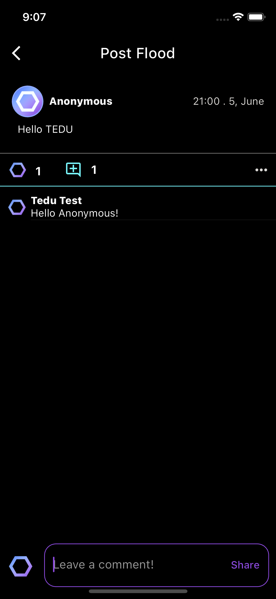

Univhex
Univhex
1. Introduction
Univhex aims to increase the amount of interaction between students on the same campus. Students will be able to register on this platform by verifying their university e-mail addresses. This way, we ensure that non-students will not be able to register to the app. The app structure will have a similar structure to other social media apps in today’s world. It will have a profile page for every individual user where the information about them takes place. A home page where users shared content, such as posts, will flow. Sharing a post in Univhex will be able to be done anonymously or with the user’s name. Finally, we need to inform that, Univhex will be a social interaction platform and it won’t contain any educational purposes.
2. Requirements Analysis
2.1 Functional Requirements
• Users can sign-up with their university e-mail.
• Users can monitor the posts on the main and discover pages.
• Users can share posts.
• Users can give like to a post.
• Users can comment to a post.
• Users can navigate through different pages.
• Users can see their posts on their profile pages.
• Users can report the post.
2.2 Non-Functional Requirements
2.2.1 Reliability
• There should no data leak or loss during any transaction between server and client.
• Application must not crash randomly, if it crashes then it needs to recover itself from that
error. Also, the application must send a error report to server.
2.2.2 Usability
• Univhex application must have a user friendly UI that anyone can use te application with ease.
2.2.3 Compatibility
• Univhex application will be working on both IOS and Android devices.
2.2.4 Security
• Application will protect the user information such as email, password, phone number.
2.3 Pseudo Requirements
2.3.1 Language and Economic Constraints
• Application will support English and Turkish language.
• Because we use Github webpage we do not give any money to domain.
• Open-source libraries will used for Univhex application.
• For database and backend we use Firebase, and because of that we will not use any API’s or any
other services.
2.3.2 Implementation Constraints
• Univhex application will be operating on mobile devices such as Android and IOS.
• Flutter will provide cross-platform for both Android and IOS devices.
2.3.3 Social, Ethical and Professional Constraints
• Univhex can used by any university students.
• Any of the personal information of users will not shared.
• We must retain users' usernames and passwords because they must register in order to sell or
bid on the products. We're going to keep the passwords in our database to manage this securely.
Moreover, the private Users' personal information, such as their phone number, name, and last
name, won't be disclosed to other users or other parties without their consent.
3. Design Architecture
3.1 Overview
We give a general overview of the system architecture and design for our application in this part. Our software solution's system architecture serves as its basis and offers a disciplined and well-organized method for achieving the project's goals. We provide a comprehensive grasp of the structure of the software system and its underlying design concepts by defining the system boundaries, identifying the architectural style, and specifying the major components.
3.2 Subsystem Decomposition
The architecture of the Univhex project will resemble a client-server approach, although the server in this case is Firebase services. Because Firebase does not define as a server, the Univhex project does not have a conventional server. On the other hand, this service performs all of the functions of a server. The client portion will consist of a mobile application that lets users sign up and log in, share posts anonymously, give posts hex (our like system), comment on posts, submit photographs for their profiles, and search other users' profiles. However, Firebase, our server, handles Univhex's data processing while users share posts or like those of other users.
3.3 Hardware/Software Mapping
Database administration for Univhex will be handled using Firebase service and Firestore. Through the Firebase Database API, a Firebase service, this service exchanges information. Depending on the activities it takes, the client will generate an HTTP request, and Firebase will respond appropriately. From any Android or iOS device, the client can access the application. Both types of devices (IOS and Android) will support all functions. In conclusion, the client will connect to the server (Firebase) via an HTTP request using the Firebase Database API.
3.4 Application Logic
3.4.1 User Manager
User manager service is handling every action of any user such as liking a post, share a post or commenting to a post. This service communicates with User Manager and Database Manager service to achieve these tasks.
3.4.2 Post Manager
This service is responsible for actions on posts. Every action such as liking, or commenting is handled by this service. This service communicates with User manager to work correctly.
3.4.3 Database Manager
This service stands as a gate between other services and Firebase Handler. It updates the Firebase Handler about data transactions.
3.4.4 Firebase Handler
This service is the most important service for this project. Firebase Handler nearly does everything that has to be needed on server. It helps to authenticate user and store it. It can count the likes on the posts or can send to comments to the Firebase storage. This service also communicates with the client side to provide user actions.
3.5 Interface
3.5.1 Mobile Application Client
This client is the main client that is used by users. Users will use the application by navigating through different pages, sharing their thoughts with posts and make interactions with other people content. All of these can be done by using the mobile application client.
3.6 Access Control and Security
Univhex application keeps different information about university students such as their university email, names and phone numbers. All of these data will be held on database and protected with secure systems.
3.7 Boundary Conditions
There are 4 different boundary conditions for the Univhex application. These are Initialization, Target Audience, Timeframe and Knowledge Limitations.
3.7.1 Initialization
Every user must have an internet connection for use the Univhex application. Also, users have the right versions of Univhex to use the application.
3.7.2 Target Audience
Univhex’s target audience is university students. Any other than university students cannot use this application. Also, each university has its own Univhex page due to conflicts.
3.7.3 Timeframe
This project developed in 8 months. Because of our lack of experience to develop a project, we do not reach the state that we wanted to be. But with time, Univhex project will get updates and new versions on future.
3.7.4 Knowledge Limitations
We developed this project with using Flutter. Due to our inexperience on Flutter, we cannot reach the point that we planned. But we are still learning and with that we can enlarge this project.
3.8 Interface Subsystem
3.8.1 Business 3rd Party Client
We explore the potential for integrating third-party clients into our university social media application, aiming to enhance functionality and user experience. By establishing strategic partnerships, we can leverage complementary services, expand our user base, and generate revenue through advertising and monetization opportunities.
3.8.2 Mobile Application Client
For our clients we focused on the development and implementation of the mobile application client for our social media platform. This includes designing an intuitive user interface, optimizing performance for various mobile devices, and ensuring seamless integration with the platform's backend infrastructure.
4. Development/Implementation Details
Our social media application's development and implementation phase included a number of crucial components to make the project a reality. First, the front-end development process concentrated on developing a user interface (UI) that is simple to use and offers an enjoyable user experience. Using flutter helped us creating aesthetically pleasing and responsive UI elements. The user interface has been thoughtfully designed to allow for simple navigation, accessibility, and responsiveness on a range of devices and screen sizes.
The backend development phase follows, where the creation of the application's server-side logic and database administration is the main goal. For user authentication, data storage, and retrieval, we used the FireStore. Processing user requests, carrying out business logic, and interacting with the database to store and retrieve user-generated content like posts, comments, and user profiles were all tasks that belonged to the backend.
Effective data storage and retrieval required careful database management and design. For our application, we used Firebase. The database schema is created to maintain data integrity, enable complex queries, and store user-related data efficiently.
We used an iterative and agile approach throughout the development and implementation phase, running tests frequently, addressing bugs, and taking user feedback into account.
In order to create a solid and useful social media application, the development and implementation phase included front-end development, back-end logic, database management.
5. Testing
5.1 Testing Details
During the testing phase, our main focus was to ensure that our social media platform for university students offers a distinctive and secure user experience. Our objective was to create a platform where students could effortlessly share their ideas, needs, wishes, and other aspects of campus life. We aimed to provide an enjoyable space for university students to connect and engage with one another. As we developed this social media platform, our utmost responsibility was to establish a safe and user-friendly environment that fostered socialization among students. The purpose of our test plan was to validate that the platform meets all the requirements and delivers a seamless experience for university students.
In our testing process, we employed a combination of manual testing and automated testing methods. Manual testing involved real users interacting with the social media platform to uncover any potential issues that may arise during regular usage. This approach allowed us to observe user behavior, gather feedback, and identify any usability or functional issues that may have been missed during development.
Additionally, we utilized automated testing to complement our manual testing efforts. Automated testing involved using testing tools and frameworks to systematically evaluate the platform's functionality, usability, security, and performance. By simulating various scenarios and test cases, we were able to uncover potential issues that may not have been immediately apparent during manual testing. This approach helped us improve the reliability and robustness of our social media platform.
By combining manual and automated testing, we aimed to ensure comprehensive coverage of the testing process. Manual testing provided valuable insights into user experience and real-world usage scenarios, while automated testing helped us detect potential issues efficiently and identify any regressions as we continued to enhance and refine the platform.
This holistic approach helped us deliver a high-quality social media platform that met the needs and expectations of university students.
5.2 Test Results
Test Case 1: Unit Testing
The App’s individual components will be tested separately to ensure they work as
intended.
Test Outcome: Passed
Test Case 2: System and Integration Testing
The app will be tested as a whole to ensure that its different components work together
seamlessly.
Test Outcome: Passed
Test Case 3: Compatibility Testing
The app will be tested to ensure it works well across different devices and platforms.
Test Outcome: Passed
Test Case 4: Performance Testing
The app’s performance will be tested under different conditions to identify the areas that
require improvement.
Test Outcome: Passed
Test Case 5: Ethical and Security Testing
The app will be tested to ensure it handles user data ethically and securely.
Test Outcome: Passed
Test Case 6: User Acceptance Testing
A selected group of end-users will test the app in real-world conditions to ensure it meets
their needs and expectations.
Test Outcome: Users' acceptance and positive feedback will show that the app satisfies
their needs and expectations, which is what we hope for.
Test Case 7: Usability Testing
The app’s usability will be tested to evaluate how easy it is to use and navigate.
Test Outcome: Passed
Test Case 8: Beta Testing
The app will be released to a limited group of users to gather feedback before full
release.
Test Outcome: Beta testers will likely provide us with insightful feedback that will help
us address any outstanding problems and further improve the app.
6. Use of library resources and Internet resources
A combination of library resources and online sources were used to compile thorough background data for the creation of our social media app for college students. Our research was influenced by the following dependencies, which are crucial to the project:
flutter: sdk: flutter
cupertino_icons: ^1.0.2
hexagon: ^0.2.0-nullsafety.1
auto_route: ^7.3.2
get_it: ^7.6.0
injectable: ^2.1.2
flutter_hooks: ^0.18.6
fluentui_system_icons: ^1.1.201
flutter_secure_storage: ^8.0.0
firebase_core: ^2.13.1
firebase_auth: ^4.6.2
cloud_firestore: ^4.8.0
auto_size_text_field: ^2.2.1
image_picker: ^0.8.7+5
firebase_storage: ^11.2.2
auto_route_generator: ^7.1.1
build_runner: ^2.4.4
7. Maintenance Plan and Details
Our maintenance plan for the social media application includes regular bug fixing, performance optimization, security updates, feature enhancements, and platform compatibility. We will promptly address reported issues, optimize performance metrics, apply security patches, introduce new features based on user feedback, and ensure compatibility with emerging platforms. Additionally, we will maintain up-to-date documentation and a knowledge base to provide users with self-help resources. A dedicated maintenance team will be responsible for executing these tasks, ensuring a reliable and continuously improved social media experience for university students.
8. Impact of Engineering Solutions
Global Impact: The engineering solutions used in the social media app for college students have the potential to affect users all over the world. The app can foster cross-cultural understanding, knowledge sharing, and global collaboration among students from various nations and cultures by fostering connections and facilitating communication. A more inclusive and connected global community may result from this.
Economic Impact: The creation and use of the social media app may have favorable effects on the economy. It may lead to job openings in user support, software development, and related industries. The app can also encourage entrepreneurship and innovation by enabling students to network, share ideas, and collaborate. This could result in economic growth and the launch of new businesses.
Environmental Impact: Even though the environmental effects of social media apps might not be as noticeable as in other industries, it is crucial to take sustainability into account both during development and operation. The carbon footprint of the app can be reduced and environmental sustainability improved by utilizing energy-efficient technologies, streamlining server infrastructure, and putting eco-friendly practices into practice.
Societal Impact: The university student social media app has the potential to significantly affect society. By encouraging a sense of community and facilitating the sharing of knowledge and ideas, it can improve social connectivity among students. The app can give students a place to support one another, share resources, and work together on extracurricular or academic projects. Additionally, the app can contribute to the development of a welcoming and inclusive environment for all users by supporting diversity and inclusivity.
9. Contemporary Issues
Social media platforms, especially those used by students, have a big impact on how people live their lives in today's digital world. For the success and responsible development of the app, it is essential to comprehend and address the following current issues:
Privacy and Data Protection: Users expect social media platforms to give their personal information top priority and to handle it securely in light of the growing privacy and data protection concerns. To protect user data from unauthorized access or misuse, the app needs to have strong privacy controls and clear data policies.
Cyberbullying and Online Harassment: Users' mental health is seriously threatened by the prevalence of cyberbullying and online harassment on social media platforms. Fostering a secure and welcoming online environment requires the implementation of measures to prevent and address instances of cyberbullying, such as content moderation tools, reporting systems, and user education.
Fake News and Misinformation: Concerns about the dissemination of false information and its potential influence on public discourse have been raised by the prevalence of fake news and misinformation on social media platforms. To stop the spread of false information within the app, fact-checking mechanisms should be implemented, media literacy should be encouraged, and tools should be made available for users to report false information.
Digital Well-being and Mental Health: Overusing social media sites can have a negative impact on users' mental health and general wellbeing. The app must be designed with functions that encourage good digital behavior, such as time management tools, notification settings, and resources that let users find mental health support when they need it.
Mental Health Support and Crisis Intervention: Given the potential effects of social media on mental health, it is crucial to include tools that support mental health and crisis intervention. This may entail collaborations with mental health organizations, the provision of information and support lines, or the incorporation of tools that promote wholesome interactions and self-care routines.
10. Conclusion and Future Work
In recognizing a void in the lives of university students, we embarked on a mission to bridge the gap. Our aspiration was to create an application that would empower students to seamlessly express their thoughts, connect with like-minded individuals, and navigate the challenges posed by the post-COVID-19 era. With our app, we aimed to restore the ease of meeting new people, fostering meaningful connections, and cultivating a vibrant community within the university landscape.
11. Users Manual



12. References
-
[1] Rumeysa Ozaydin. "Final Bidit: An Auction Platform". Retrieved from https://rumeysaozaydin.github.io/auction/assets/reports/Final_Bidit.pdf
-
[2] TED University. "CMPE492-Syllabus-Spring2023_v2". Retrieved from: https://lms.tedu.edu.tr/pluginfile.php/162367/mod_resource/content/2/CMPE492-Syllabus-Spring2023_v2.pdf
Group Members: Çağla Köse, Doğa Türkmen, Mert Arcan, Oytun Uras Şahin
Project Advisor: Venera Adanova
Jury Members: Aslı Gençtav, Elif Kurtaran Özbudak